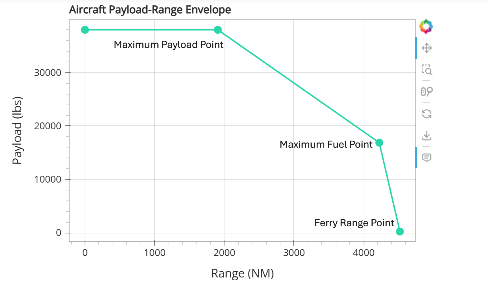

Payload Range Functionality.#
Overview#
Payload Range functionality is currently available for the HEIGHT_ENERGY missions and FLOPS mass systems.
A payload-range diagram is an aircraft performance visualization that illustrates the trade-off between how much weight the aircraft can carry in terms of passengers and cargo (payload) vs how far it can fly (range). The payload-range shows 3 different points:
Maximum Payload Point: The maximum structural payload the aircraft can carry with sufficient fuel to achieve its design range, this is the ‘sizing’ mission.
Maximum Fuel Point: The maximum fuel the aircraft can hold with additional payload up to the aircraft’s max takeoff weight.
Ferry Range Point: The maximum fuel the aircraft can carry with zero payload to achieve maximum possible range.

After a successfull sizing mission (Maximum Payload Point) the payload-range function calculates the required aircraft loading conditions and runs an off-design fallout mission for reach of the Maximum Fuel Point and Ferry Range Points.
The fallout missions take payload, phase_info and mission_mass of the aircraft as inputs and solve for the maximum achievable range.
It is assumed that the phase_info contains a standard climb, cruise, descent phases and Aviary will automatically adjust the time_duration_bound of the cruise phase to elongate the trajectory for the longer off-design missions.
Note
We highly recommend that users first read through Off Design Missions to understand the underlying mechanics of how Aviary runs off-design missions.
Next, the system automatically recalculates the aircraft:crew_and_payload:total_payload_mass for the off-design missions:
Maximum Fuel Point: The payload is assumed to be proportionally reduced in all categories to accommodate for the additional fuel up to capacity. The
mission_massis set to themission:design:gross_massof the sizing mission/Maximum Payload Point.Ferry Range Point: The payload is reduced to one passenger (due to off-design limitations) with the
mission_massargument set to theaircraft:design:operating_massplusaircraft:fuel:total_capacity.
After which the Maximum Fuel Point and Ferry Range Point are run immediately after the Maximum Payload Point.
Note
Aviary is structured to give a payload-range diagram even a Maximum Fuel Point is not feasable, in those cases just the Maximum Payload Point and Ferry Range Point are plotted.
Running a payload/range analysis#
Input CSV File#
There are currently two methods to run a payload-range analysis. The first method is to add the following line to the Aviary inputs CSV file.
settings:payload_range, True
Note
This will result in Aviary running a payload-range analysis every time that specific aircraft is sized.
Manual Function Call#
The second method is to manually call the run_payload_range() function after running a sizing mission.
If verbosity is set to 2 or higher, the function will print the payload-range values directly into the terminal.
(prob_fallout_max_fuel_plus_payload, prob_fallout_ferry) = prob.run_payload_range(verbosity=2)
Verbosity: optional parameter, default value = 1. Prints payload-range to terminal if Verbosity ≥ 2.
The function returns a tuple containing two Aviary problem objects.
prob_fallout_max_fuel_plus_payload: off-design mission ran for the Maximum Fuel Pointprob_fallout_ferry: off-design mission configured for Ferry Range Point
Output and visualization.#
The payload-range values are saved within the payload_range_data.csv file within the reports folder of the sizing mission’s Aviary output directory.
The information is also visualized within the Payload/Range Diagram tab in the Aviary dashboard for the sizing mission.
Note
Aviary will only save and illustrate a payload/range analysis if the sizing and two off-design missions converged to a valid solution.
Example:#
The user can then within the script used to run the sizing mission interrogate the off-design missions. An example of a payload/range being manually executed is available below.
%%capture
import aviary.api as av
# defaults for height energy based phases
phase_info = av.default_height_energy_phase_info
##################
# Sizing Mission #
##################
prob = av.AviaryProblem()
# Load aircraft and options data from user
# Allow for user overrides here
prob.load_inputs('models/test_aircraft/aircraft_for_bench_FwFm.csv', phase_info)
# You can either set the payload/range toggle 'settings:payload_range' to True in the input file,
# or you can manually run the payload/range at the end of the script.
# Preprocess inputs
prob.check_and_preprocess_inputs()
prob.add_pre_mission_systems()
prob.add_phases()
prob.add_post_mission_systems()
# Link phases and variables
prob.link_phases()
prob.add_driver('SLSQP', max_iter=50)
prob.add_design_variables()
# Load optimization problem formulation
# Detail which variables the optimizer can control
prob.add_objective()
prob.setup()
prob.set_initial_guesses()
prob.run_aviary_problem()
# Manually run the payload/range analysis
# The script will only print values to the terminal if verbosity is set to VERBOSE (2) or higher
# The analysis can return the max_fuel_plus_payload & ferry fallout missions for further analysis
(prob_fallout_max_fuel_plus_payload, prob_fallout_ferry) = prob.run_payload_range(verbosity=2)
# This returns the two Aviary problem objects that can then be interrogated like any regular Aviary object.
max_payload_plus_fuel__payload = prob.get_val(av.Aircraft.CrewPayload.TOTAL_PAYLOAD_MASS, 'lbm')[0]
max_fuel_plus_payload__payload = prob_fallout_max_fuel_plus_payload.get_val(
av.Aircraft.CrewPayload.TOTAL_PAYLOAD_MASS, 'lbm'
)[0]
ferry__payload = prob_fallout_ferry.get_val(av.Aircraft.CrewPayload.TOTAL_PAYLOAD_MASS, 'lbm')[0]
max_payload_plus_fuel__range = prob.get_val(av.Mission.Summary.RANGE, 'nmi')[0]
max_fuel_plus_payload__range = prob_fallout_max_fuel_plus_payload.get_val(
av.Mission.Summary.RANGE, 'nmi'
)[0]
ferry__range = prob_fallout_ferry.get_val(av.Mission.Summary.RANGE, 'nmi')[0]
# In Aviary's terminal output, the manual and automatic prints will be exactly the same.
print('--------------------')
print('Manual Payload/Range')
print('--------------------')
print('Range', 0, max_payload_plus_fuel__range, max_fuel_plus_payload__range, ferry__range)
print(
'Payload',
max_payload_plus_fuel__payload,
max_payload_plus_fuel__payload,
max_fuel_plus_payload__payload,
ferry__payload,
)
---------------------------------------------------------------------------
TypeError Traceback (most recent call last)
Cell In[2], line 41
36 prob.run_aviary_problem()
38 # Manually run the payload/range analysis
39 # The script will only print values to the terminal if verbosity is set to VERBOSE (2) or higher
40 # The analysis can return the max_fuel_plus_payload & ferry fallout missions for further analysis
---> 41 (prob_fallout_max_fuel_plus_payload, prob_fallout_ferry) = prob.run_payload_range(verbosity=2)
44 # This returns the two Aviary problem objects that can then be interrogated like any regular Aviary object.
45 max_payload_plus_fuel__payload = prob.get_val(av.Aircraft.CrewPayload.TOTAL_PAYLOAD_MASS, 'lbm')[0]
TypeError: cannot unpack non-iterable NoneType object